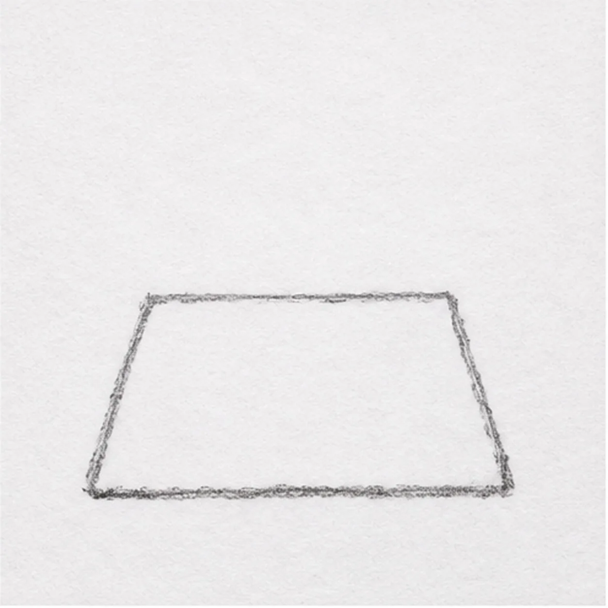
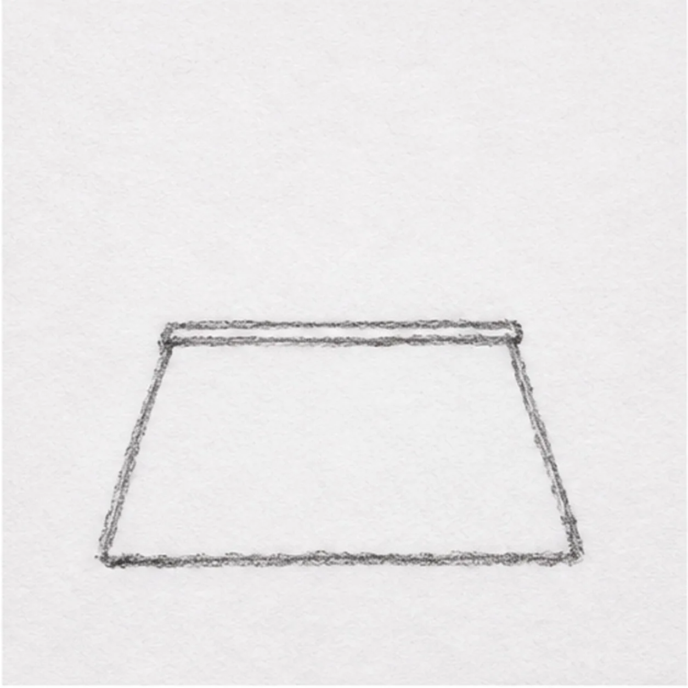
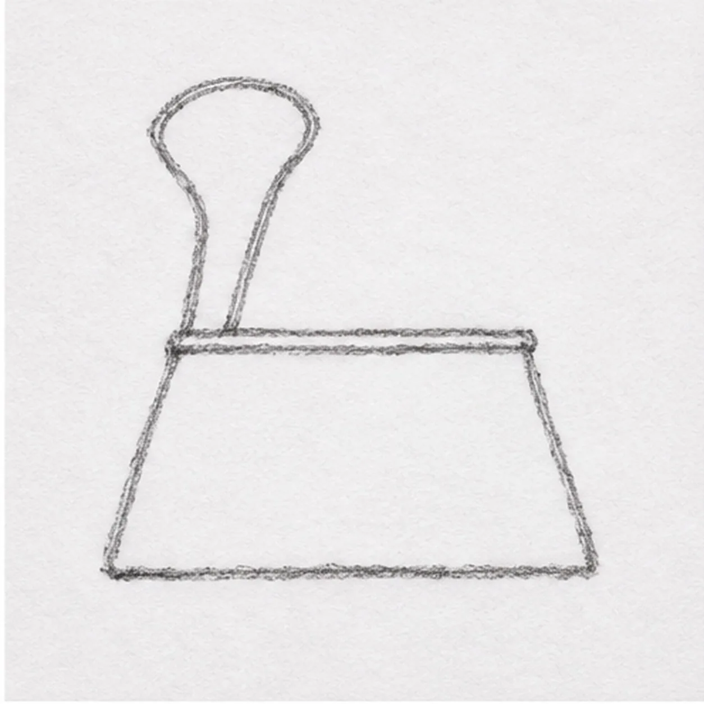
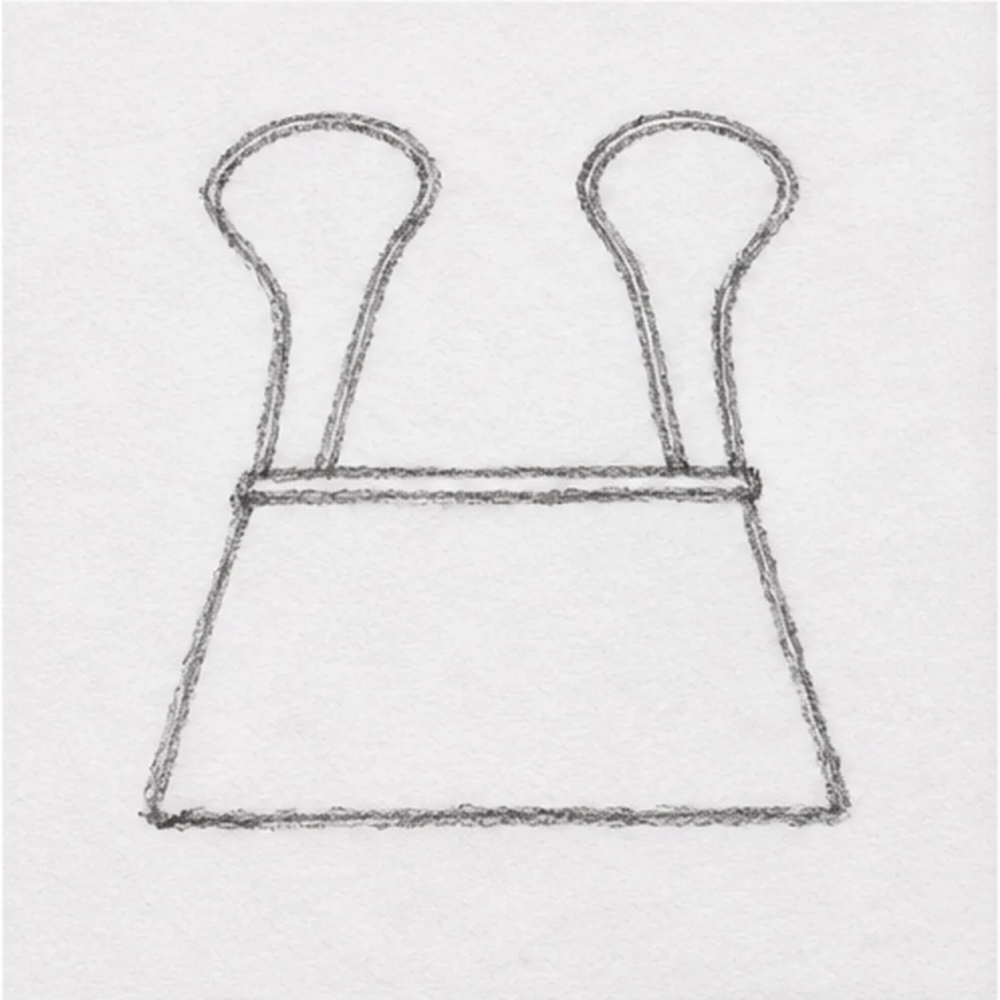
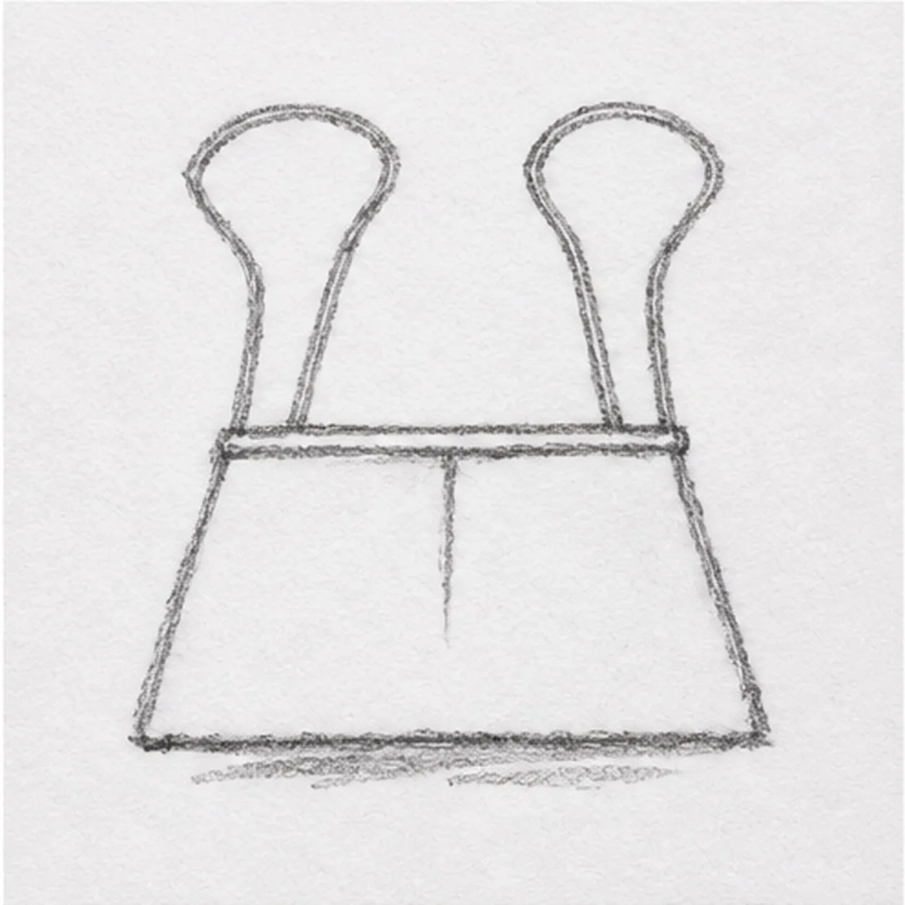

From the archive
Let's draw a binder clip
Treat this as one small practice round: build the subject lightly, notice the shapes, then darken only the lines that help the finished sketch.
-
01

Shape the clip body
Sketch a short horizontal top edge, angle both sides outward, and connect them with a wider flat base. Leave open paper above the two top corners for the wire handles.
Sketch tip: Start with the short top edge so the lower base can widen evenly.
-
02

Fold the top lip
Run one shallow line just below the top edge and join its ends to the upper corners. Keep the broad front face clear.
Sketch tip: Keep the lip close to the top; the body needs open space below it.
-
03

Raise the left handle
From the left upper corner, lift a slim wire loop above the clip, curve it inward, and return it near the same hinge. Keep the loop open in the middle.
Sketch tip: Anchor both wire ends at the same left hinge rather than floating the loop.
-
04

Raise the right handle
Repeat the bent loop from the right upper corner, folding it inward beside the left wire without merging their two open centers.
Sketch tip: Compare the two loops before adding the crease; their heights should feel related.
-
05

Set the crease and shadow
Place one short vertical crease beneath the folded lip, then sketch two or three light horizontal shadow strokes immediately below the flat base.
Sketch tip: Let the shadow break into a few strokes so the clip stays light on the page.
-
06

Shade the metal
Use the side of a 2B pencil to darken the existing trapezoid, leaving a slim paper highlight near one edge. Strengthen the two wire loops, lip, crease, and broken shadow without changing their positions.
Sketch tip: Shade with the side of the pencil and preserve a paper highlight on the dark metal.